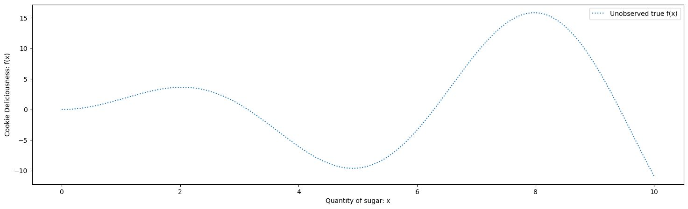
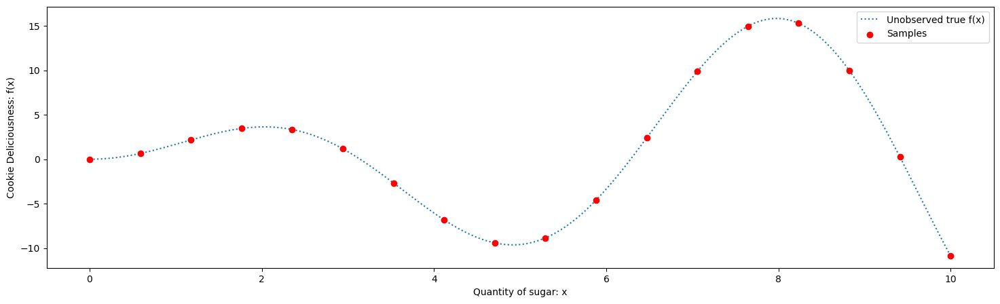

This is the first part in my Intro to Bayesian Optimization
-
- Optimization Intuitions
- 2. The Bayesian Optimization Framework
- 3. Intro to Bayesian Statistics
- 4. Gaussian Processes
We often want to answer questions like: “What quantity of each parameter will give us the best results?” These parameters could be the ingredients of a cookie or the best hyperparameters for tuning a machine learning algorithm. In our context, that might be questions like: how much of some ingredients (or maybe heat or time or pH) will give us the best results on some assay? We might also have experiments with extremely noisy measurements: for example asking people how they rate the taste of something.
Traditionally we may define a set of experiments by picking a range of parameters, collecting the data, and then analyzing it to come to some conclusion. However, if the experiments are run iteratively or in batches, rather than all in parallel, then we can learn the best way to conduct the experiment by picking parameters that will give us the most new information at every step. Bayesian Optimization provides both a way to find the best combination of parameters, and a method that tells us how to best collect samples in a very efficient way; so we either get more information from the same number of experiments, or the same information with less experimenting.
There are many approaches to optimization that suit different experimental setups; where Bayesian Optimization shines is in black-box situations where sampling is expensive and iterative. That is,
- we don’t have a complete theory for how the parameters affect the outcome (there is no exact function that we know),
- each evaluation of parameters takes up a lot of time/resources (e.g. training a machine learning model for a week, running an experiment that takes a few hours, or even the full process of creating a product)
- iterative; we repeat conducting an experiment, seeing the results, and then making choices about the next experiment. As opposed to running all experiments in parallel.
We’ll go through 4 sections
- Optimization intuitions
- The Bayesian Optimization framework
- Intro to Bayesian statistics: Bayesian Linear Regression as an example
- Gaussian Processes
Glossary
Don’t worry, we’ll cover all of these.
| term | definition |
|---|---|
| black box | a process that we don’t understand, but we can measure the inputs and outputs to gain understanding |
| optimization | finding the point of and value of that maximize or minimize some function |
| the maximum value of some function you can get by varying | |
| the value of that maximizes some function | |
| sample | some combination of variables that you decide to run an experiment on (or evaluate a function at) |
| sample/search space | all possible combination of variables |
| search method | the method by which you decide to select samples for your experiment |
| grid search | a search method where you sample in even increments across your variables |
| random search | a search method where each variable is chosen (uniformly) randomly independently from the others |
| exploration | searching in regions of the sample space that haven’t been visited before to increase information |
| exploitation | searching in regions of the sample space that you think will give you the best results according to your existing information |
| acquisition function | a function that tells you how much useful information you get from sampling at any given point in your search space in order to get to the optimal value, balancing exploration with exploitation |
| expected value | the theoretical mean for some random event |
| likelihood distribution | $p(\mathbf{y} |
| prior distribution | : your belief of the probability distribution of some parameters in the absense of any observed data |
| posterior distribution | $p(\beta |
| confidence interval | (probability for the interval) for a given fixed parameter , an interval that proportion of the time would contain the parameter if many experiments were run $$\text{interval }[a,b]\quad\text{drawn once from a distribution such that}\quad P(a < \beta < b |
| credible interval | (probability for the parameter) an interval with a probability that a sample of a parameter is drawn from the interval $$\text{interval }[a,b]\quad\text{such that}\quad P(a < \beta < b |
| upper confidence bound | In a confidence or credible interval, the upper bound for the interval. E.g. in interval [a,b], the value b. If we have a normal distribution with mean and standard deviation , then for some value , this will be where is calculated from . E.g. the 95% upper confidence bound is |
| Gaussian Process | A collection of random variables, such that any finite or infinite subset of them have a joint Normal distribution. A GP is defined by its mean function and kernel which specifies the covariance between variables of the GP |
Section 1: Optimization Intuitions
Optimization is an enormous subsection of mathematics and statistics. For different problems, different approaches work best. In this section we’re going to lay a basic framework of what optimization is and get an understanding of where we might use different optimization methods, so we can get an idea of where Bayesian Optimization is the tool to use.
In optimization, we always frame things in terms of functions. For example, we may have some ingredients , where is the quantity of ingredient . There can be a single or many dimensions of (many ingredients). We’ll assume only one dimension of for now (one ingredient), but there can be many. We want to find an optimum (minimum or maximum) of some function . Performing experiments to get the result is referred to as a sample from the function. When we take samples , we either have no error in our measurements , or we have noisy measurements where is some random variable that models the error.
We use to refer to the minimum value of you can get from varying , and to refer to the value of that minimizes . The terminology here is that is a function of , and is an argument of .
Types of optimization
If the function is kown, sometimes there is an analytic solution. Using calculus we can find that is minimized at .
Or even if there is no analytic solution, e.g. for , or more complicated examples like the loss of a neural net as a function of its weights and biases, we can find the minimum using gradient methods like Newton’s method or gradient descent.
But what if we don’t know the function? Black-box optimization
There are countless problems where we don’t have an explicit formula for the function. Think of any experiment you’ve ever conducted, we mostly take samples because we don’t know the underlying function, and we usually either want to model that function to make predictions or find its optimal value.
This also occurs frequently in Machine Learning in the area of Hyperparameter Optimization. For instance, using Lasso Regression you can easily find parameters that fit the data the best for a given penalty term, but how do you select the penalty term itself that results in the best fit? There is no explicit relationship, and has to be found with experimentation.
When we can collect a lot of samples, there are techniques like genetic algorithms and simulated annealing we can use. However, in many cases, the function can be very expensive to evaluate, so we need to very quickly converge to a good solution.
Example: Cookies
Consider a recipe for a cookie. Let’s say we want to figure out how much sugar we should add (with all the other ingredients in fixed amounts). Too little sugar, and you’ve just made bad bread. Too much, and it can be too sweet, or the sugar can start ruining the texture. We know the limits of no sugar and infinite sugar are undesirable, but we suspect there’s some sweet spot in the middle, or there may even be a few local maxima.
Let be the amount of sugar:
but we don’t really know what that function f(x) looks like, we don’t yet have a theoretical understanding of this relationship, we have to rely on sampling, which here would be making a cookie then seeing how good it is. Also in measuring the Cookie Deliciousness, we may need to introduce humans as evaluators of the function, and they are very fickle, so introduce randomness through random variable into the measurement.
Sampling the function
Let’s say we don’t have randomness for now. How do we approach the problem of finding the amount of sugar that maximizes the deliciousness score?
Firstly, we assume that the function exists, but we don’t know it.

True maximum Deliciousness of 15.833 at x = 7.978
Grid Search
Maybe one thing we could do is sample at a whole bunch of points to get the information. Let’s do it evenly spaced. We call this approach Grid Search

Maximum Cookie Deliciousness of 15.288 estimated at x = 8.235
True maximum Deliciousness of 15.833 at x = 7.978
You can find a good solution, but at what cost. Imagine actually doing these experiments one by one, it’d get boring fast and take up a lot of time.
If you sampled in increasing order of amount of sugar, you’d instinctively want to change the size of the steps as you go. As you got to x = 4 you’d know you’re in a bad region, so you’d want to skip ahead to see where things may start getting better.
This illustrates some points:
- sampling can be expensive, it takes up valuable time and resources
- your sampling method may vary in efficiency, there may be fewer samples needed to arrive at a good solution
- efficient sampling may be helped with sampling sequentially, maybe there’s a smart way to pick your next sample point based on previous data
Multivariate functions and Random Search
What if we still only want to sample 9 times, but our variable space is 2 dimensional? E.g. we want to measure quantity of sugar and quantity of baking powder
When you specify a grid, you will end up oversampling values of any specific variable, as you will need that value combined with the values of your other variable that are specified by the grid.
For most optimization problems that are multivariate, Random Search is a much more efficient way to sample the space. That is, to get a sample point , sample and independently and uniformly from their respective domains.

You may notice that random search introduces some clustering, which is why methods such as stratified sampling and latin hypercube sampling (LHS) are used. In stratified sampling, the search space is divided into a grid, and one random point in each grid box is selected. In LHS, a finer grid is used, and then a sodoku property is applied, such that you only sample once from each row and column (or the extension in more dimensions).

Section 1 Summary
In optimization, we model our problem as a function. When we don’t know the function (e.g. we don’t have a complete theory for the real-world problem), we can use black-box approaches which rely on sampling the function (e.g. conducting an experiment). However, running experiments can be expensive, so we want to reduce the number of experiments we conduct to get a good result.
A common choice for black-box optimization is grid search, but this can be very inefficient, especially as we increase our number of parameters. Better choices are random search and related sampling methods that don’t over-sample specific parameter values as much.
However, in all these methods, if we sample the points one at a time or in small batches, can we be more intelligent about our choice in samples?
In the next section we will go over Bayesian Optimization as an answer to this question.